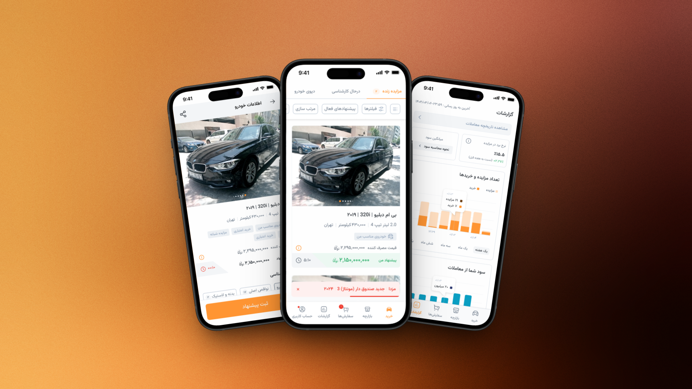

Dealer App
Skills & Methods
- Design System
- Prototyping
- Usability testing
- A/B testing
- Accessibility
- Interview
- IA
- Userflow
Tools
- Figma
- Miro
- Firebase
- Clarity
- figmamake

My Role: Product Designer
Team: Developers, Product Manager, QA,Support , Data analytics
Status: Released
Case Study Summary
This case study focuses on redesigning the Dealer App to improve clarity, transparency, and control for professional dealers by simplifying complex flows such as auctions, orders, and payments.
The result was higher user efficiency and trust, reduced support dependency, and improved engagement and retention while preserving critical business data integrity.
The objective
The Dealer App was created for active buyers in the automotive market-users who interact with multiple listings, conversations, and decisions on a daily basis.
Before this project, the experience felt fragmented. Users often got lost in the flow, struggled to keep track of their personal history, and had limited control over their own settings. Important data was easily missed or lost along the way, which led to low engagement and poor retention. Many routine issues were also redirected to support teams, increasing operational friction.
This project aimed to reshape that experience into something more professional, clear, and dependable. On the business side, the goal was to reduce reliance on support, while increasing conversion, engagement, and long-term retention. On the user side, the focus was on giving dealers a stronger sense of control through clearer flows, better accessibility, and personalized features that matched how they actually work.
By bringing clarity to complex flows and making personalization easier to access, the Dealer App set out to turn a confusing experience into one that feels structured, empowering, and trustworthy.
The Impact
The redesign of the Dealer App had measurable and qualitative impacts on both users and the business:
1. Improved User Efficiency & Reduced Confusion
- Dealers could navigate auctions, orders, and payments more quickly thanks to real-time status indicators and clear stepwise updates.
- Reduced cognitive load and frustration from unclear processes.
2. Increased Transparency & Trust
- Contextual feedback for cancellations and structured vehicle inspection information made users feel more confident in their decisions.
- Clear notifications and actionable information minimized repeated support requests and user uncertainty.
3. Enhanced Financial & Operational Accuracy
- Stepwise payment visibility, proper wallet integration, and settlement tracking ensured that transactions were transparent without exposing sensitive business data.
- Reduced errors in order management and financial processes.
4. Higher Engagement & Retention
- Clear processes, actionable notifications, and visible outcomes encouraged users to stay active in auctions and complete transactions, increasing overall engagement.
- Improved trust in the system likely contributed to higher retention rates.
5. Business Alignment
- Maintaining data integrity while improving UX protected business-critical information.
- Reduced support workload due to fewer user inquiries and confusion.
Overall, the project demonstrated how a thoughtful balance between user transparency and business security can drive both satisfaction and operational reliability.
Background
This project began in response to a combination of business requests, user complaints, and data analysis focused on critical user flows. Although the Dealer App already existed, insights showed that several high impact journeys, particularly around auctions and order management, were creating friction and negatively affecting user satisfaction.
While features such as bidding, auctions, and parts of the purchase order flow were functional, the overall experience felt incomplete and fragmented. Users had difficulty tracking losing auctions, accessing order history, managing tickets, and customizing their auction preferences. These gaps reduced clarity and made it harder for users to stay engaged throughout the process.
From a business perspective, the accuracy and reliability of data were highly critical, which introduced constraints and influenced many design decisions. Project success was primarily measured by improved user satisfaction while maintaining the integrity of essential business data.
This context shaped the direction of the project, shifting the focus toward completing core flows, reducing friction in key areas, and aligning user needs with business priorities.
Research Plan & Research
To better understand the challenges within the existing Dealer App, a mixed-method research approach was conducted, focusing on both usability and clarity of critical flows.
The research included usability testing on the previous version of the app, user interviews with active dealers, interviews with support teams, and a detailed review of behavioral and business data. The goal was to identify breakdowns in key journeys and understand why users were disengaging or relying heavily on support.
The primary users were professional dealers and active buyers in the automotive market. Most of them handled multiple transactions simultaneously, had limited time for in-person visits, and relied heavily on accurate inspections, transparent processes, and fast decision-making.
Research efforts were mainly focused on high-impact areas such as auction flows, order management, transaction history, ticketing, and financial processes. Special attention was given to post-auction experiences, including payment, legal steps, and document tracking.
Key Insights
- Research revealed that lack of transparency was the core issue across most user journeys. Users frequently felt uncertain about the status of auctions, orders, payments, and legal documents. This uncertainty led to mistrust, repeated support requests, and abandoned flows.
- Transaction history and order tracking were especially critical. Users needed precise timestamps, clear status updates, and reliable records to manage their planning and finances. Inaccurate or delayed updates, particularly around membership levels, payments, and settlements, significantly reduced trust.
- The auction experience itself was a major source of friction. Users struggled to distinguish between winning, losing, and canceled auctions. Cancellations often lacked clear reasons, and important information such as vehicle condition, engine status, chassis damage, and inspection details was either hard to find or inconsistently presented. Visual inspection assets were also problematic due to heavy image and video sizes and unclear prioritization of critical defects.
- Financial and legal processes created additional complexity. Multi-step and mixed payment methods (wallet and online payments), long waiting times in legal review stages, unclear document requirements, and limited visibility into ownership transfer and tax-related steps caused frustration and anxiety, especially in high-value transactions.
- Search and filtering capabilities were another major pain point. Dealers often searched for very specific vehicles, locations, or transaction records, but existing filters were insufficient across auctions, deposits, orders, and history. Users expected advanced, consistent search and filtering across all sections.
- Finally, users expressed a strong need for timely and actionable notifications. Missing or unclear notifications during auctions, order progression, document transfers, and payment steps caused users to constantly check the app or contact support. Toasts and alerts were frequently ignored, indicating the need for more effective notification strategies.
Overall, the research highlighted that dealers were not just looking for more features, but for clarity, trust, and control. A system that clearly communicates status, protects financial and legal integrity, and reduces uncertainty was essential to improving engagement and retention.
The problem(s) or Question(s)
Based on research insights, the challenges of the Dealer App were consolidated into three core UX problems.
- Time loss and cognitive overload
Dealers were spending excessive time navigating complex and fragmented flows. Unclear statuses, scattered information, and long waiting times especially in auctions, payments, and legal steps created confusion and mental fatigue. This often resulted in abandoned flows and repeated attempts to complete the same tasks. - Lack of clear order and transaction tracking
Users had limited visibility into the real-time status of their orders, payments, documents, and legal processes. Missing timestamps, unclear progress indicators, and delayed updates made it difficult for dealers to plan their activities and trust the system. - Lack of transparency without compromising business data
Dealers needed clear, actionable information about auctions, vehicle condition, cancellations, payments, and legal outcomes. At the same time, sensitive business data and internal rules could not be fully exposed. This imbalance caused confusion for users while increasing risk for the business.
From these challenges, the project was framed around the following key UX question:
How might we provide dealers with clear, timely, and trustworthy information that reduces confusion and saves time, while ensuring business-critical data remains protected and reliable?
Ideation
1. Clear Status Communication
- Show the current step of orders, auctions, and payments.
- Provide estimated timelines for next steps.
- Avoid exposing internal names, rules, or sensitive business logic.
2. Transparent Cancellation & Outcome Reasons
- Always display why an auction or order was canceled.
- Indicate the impact on user’s membership or rewards.
- Suggest next actions (e.g., view similar vehicles).
- Keep internal decision-making processes hidden.
3. Payment & Settlement Visibility
- Provide clear information about payment status, pending settlements, and expected completion time.
- Users should understand where their money is without seeing internal cash flow or account structures.
4. Vehicle & Inspection Transparency
- Show engine, chassis, and body status clearly.
- Highlight defects with intensity levels (low / medium / high).
- Maintain clarity without showing internal scoring methods or weighting criteria.
5. Actionable Notifications
- Notify users about every critical step: auction status, order progression, document transfer, payments.
- Ensure notifications are clear and timely, so users don’t have to constantly check or call support.
6. Balance Between Transparency and Business Safety
- Provide all user-relevant information to reduce confusion and frustration.
- Keep sensitive business data hidden to protect internal rules, financials, and operational logic.
Principle Summary:
Transparency is not exposing all internal data. It is clearly communicating what is happening, why it matters to the user, and what comes next.
Visual design
1. Clear Status Communication → Real-Time Progress Indicators
- Introduce visible progress bars and step indicators for auctions, orders, and payments.
- Show estimated time for each stage to set realistic expectations.
- Keep internal logic hidden while giving users confidence in the process.
2. Transparent Cancellation & Outcome Reasons → Contextual Feedback
- Display the reason for cancellations (e.g., inspection mismatch, missing documents).
- Show impact on membership, rewards, or next possible actions.
- Provide actionable suggestions, like “view similar vehicles,” to guide users.
3. Payment & Settlement Visibility → Stepwise Payment Updates
- Clearly indicate payment status, pending settlements, and completion times.
- Allow users to track wallet deductions, pre-payments, and final settlements without revealing internal cash flows.
- Offer flexibility in payment selection while maintaining clarity.
4. Vehicle & Inspection Transparency → Visual & Structured Details
- Highlight critical vehicle information: engine status, chassis, body defects, inspection notes.
- Use severity levels or color codes for defects to communicate priority clearly.
- Maintain internal scoring and evaluation criteria hidden.
5. Actionable Notifications → Proactive & Contextual Alerts
- Send timely notifications for every important step: auction updates, order status, document transfers, and payment confirmations.
- Ensure notifications are actionable, e.g., “Your auction is ending soon – place your bid,” instead of vague alerts.
6. Balance Between Transparency and Business Safety → Guided Visibility
- Show users all relevant information to reduce confusion.
- Keep sensitive business data (pricing algorithms, internal evaluations, cash flow) private.
- Design UI elements that communicate certainty and trust without exposing internal operations.

Prototype & Test
To validate design decisions and ensure the new Dealer App met user needs, a variety of usability and validation methods were employed:
1. Usability Testing
- Conducted on the previous version and prototypes to identify friction points in auctions, orders, payments, and legal processes.
- Focused on critical flows such as placing bids, tracking orders, and viewing vehicle inspections.
- Observed user behaviors to uncover confusion, errors, and delays.
2. Clarity & Comprehension Testing
- Tested whether users could understand status updates, cancellation reasons, and notifications.
- Ensured that complex information (e.g., vehicle defects, payment stages) was presented clearly without exposing sensitive business logic.
3. User Interviews
- Conducted with professional dealers and support staff to gather qualitative insights.
- Explored pain points, expectations, and desired features (e.g., “gosh be zang” notifications, advanced filters).
- Validated that proposed solutions addressed real-world needs.
4. Data-Driven Analysis
- Analyzed behavioral and transaction data from the app to identify bottlenecks, common errors, and abandoned flows.
- Used this data to prioritize which flows and features required design intervention.
5. Feedback Iteration
- Design iterations were continuously refined based on testing results.
- Adjustments included improving notifications, restructuring vehicle inspection visuals, and simplifying payment steps.
6. Stakeholder Reviews
- Presented prototypes to internal stakeholders (product, analytics, and support teams) to ensure alignment with business goals and technical feasibility.
These methods ensured that the redesigned app not only reduced confusion and saved users time but also maintained business integrity and operational reliability.
Conclusion
The Dealer App redesign focused on addressing core challenges faced by professional dealers: time loss, confusion, unclear order and auction statuses, and lack of transparent but secure information. Through a combination of research, user interviews, usability testing, and data analysis, the project uncovered critical friction points in auctions, orders, payments, legal processes, and vehicle inspection.
Design decisions prioritized clarity, transparency, and actionable feedback, while safeguarding sensitive business data. Key improvements included:
- Real-time progress indicators and stepwise updates for orders and auctions.
- Contextual feedback for cancellations and outcomes.
- Clear visibility into payments, settlements, and wallet usage.
- Structured, visual presentation of vehicle inspection and defect information.
- Proactive, contextual notifications for all critical stages.
The outcome ensured that dealers could operate efficiently, make informed decisions, and trust the system, all while maintaining business data integrity. These improvements are expected to increase engagement, retention, and overall user satisfaction, ultimately enhancing the effectiveness and credibility of the platform in the competitive automotive market.
This project highlights the importance of balancing transparency and business safety, showing how user-centered design can directly improve both experience and operational reliability